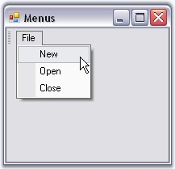

Follow the steps below to create and populate the toolbar with menus.
6. Create an instance of Toolbar and associate it with MainFrameBarManager.
|
[C#]
private Syncfusion.Windows.Forms.Tools.XPMenus.Bar bar1; this.bar1 = new Syncfusion.Windows.Forms.Tools.XPMenus.Bar(this.mainFrameBarManager1, "MyMenu"); this.mainFrameBarManager1.Bars.Add(this.bar1); this.bar1.Manager = this.mainFrameBarManager1; |
|
[VB.NET]
Private bar1 As Syncfusion.Windows.Forms.Tools.XPMenus.Bar Private Me.bar1 = New Syncfusion.Windows.Forms.Tools.XPMenus.Bar(Me.mainFrameBarManager1, "MyMenu") Me.mainFrameBarManager1.Bars.Add(Me.bar1) Private Me.bar1.Manager = Me.mainFrameBarManager1 |
7. Add bar items to the ParentBarItem.
|
[C#]
this.parentBarItem1.Items.AddRange(new Syncfusion.Windows.Forms.Tools.XPMenus.BarItem[] {this.barItem1,this.barItem2, this.barItem3}); |
|
[VB.NET]
Me.parentBarItem1.Items.AddRange(New Syncfusion.Windows.Forms.Tools.XPMenus.BarItem() {Me.barItem1,Me.barItem2, Me.barItem3}) |
8. Finally add ParentBarItem to the toolbar.
|
[C#]
this.bar1.Items.AddRange(new Syncfusion.Windows.Forms.Tools.XPMenus.BarItem[] {this.parentBarItem1}); |
|
[VB.NET]
Me.bar1.Items.AddRange(New Syncfusion.Windows.Forms.Tools.XPMenus.BarItem() {Me.parentBarItem1}) |
9. You can make the toolbar to occupy the entire row in the form by setting BarStyle property to following values.
|
[C#]
this.bar1.BarStyle = ((Syncfusion.Windows.Forms.Tools.XPMenus.BarStyle) ((((Syncfusion.Windows.Forms.Tools.XPMenus.BarStyle.AllowQuickCustomizing | Syncfusion.Windows.Forms.Tools.XPMenus.BarStyle.IsMainMenu)| Syncfusion.Windows.Forms.Tools.XPMenus.BarStyle.Visible) | Syncfusion.Windows.Forms.Tools.XPMenus.BarStyle.DrawDragBorder))); |
|
[VB.NET]
Me.bar1.BarStyle = (CType((((Syncfusion.Windows.Forms.Tools.XPMenus.BarStyle.AllowQuickCustomizing Or Syncfusion.Windows.Forms.Tools.XPMenus.BarStyle.IsMainMenu) Or Syncfusion.Windows.Forms.Tools.XPMenus.BarStyle.Visible) Or Syncfusion.Windows.Forms.Tools.XPMenus.BarStyle.DrawDragBorder), Syncfusion.Windows.Forms.Tools.XPMenus.BarStyle)) |
The resulting form will look like the below image.

Figure 725: Toolbar populated with Menus
See Also